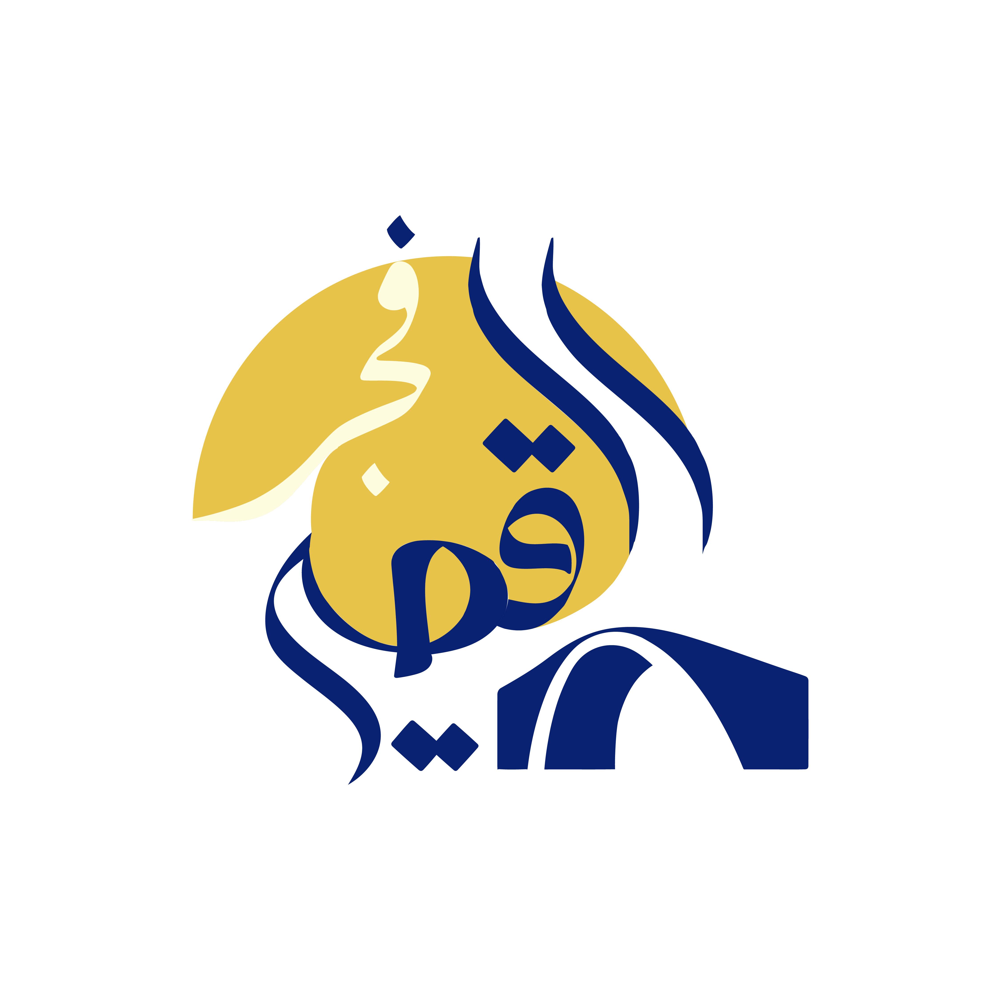

حملة فجر القصير
19 - 11 - 2025
05:00 PM
مبادرة مجتمعية تسعى لإعادة النور والحياة لمدينة جسدت معنى الثبات، ووقفت بشرف رغم الصعاب. تهدف الحملة إلى دعم جهود الإعمار والنهوض بالخدمات، وتهيئة بيئة تضمن كرامة أهلها واستقرارهم. هي عهد وفاء لمدينة علّمتنا معنى الانتماء والتضحية، ودعوة لكل قلب محب يرى أن إعادة البناء هو دين في أعناقنا قبل أن يكون مشروع إعمار